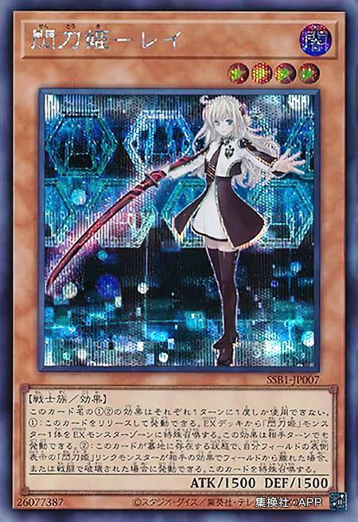
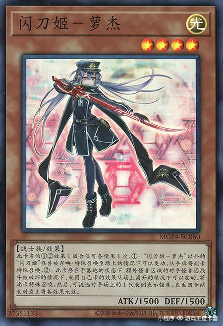
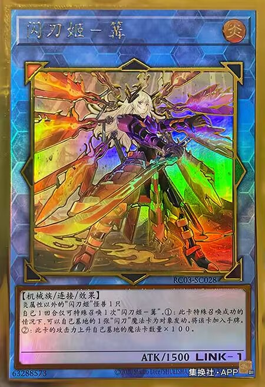
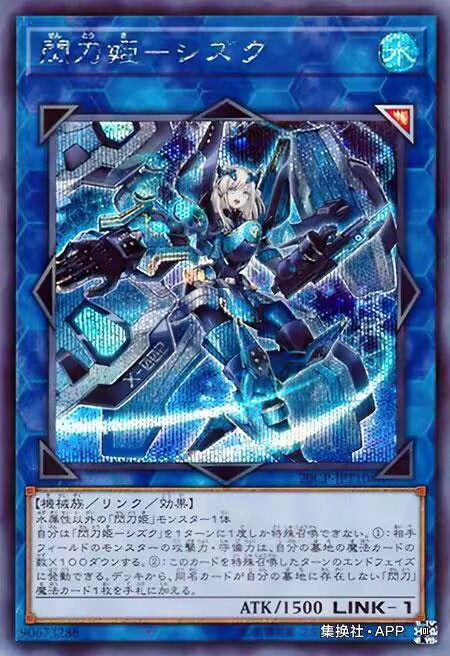
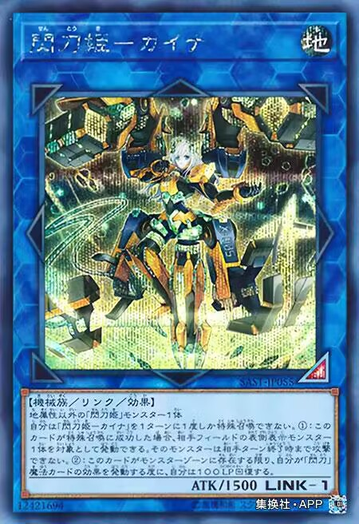
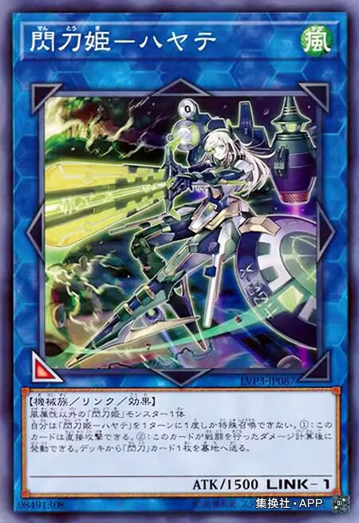
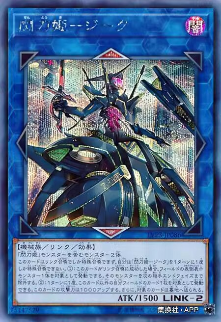

⭐⭐⭐⭐
闪刀姬-零
类别：怪兽卡
特性:link怪兽
卡密：26077387
卡牌效果
这个卡名的①②效果1回合各能使用1次。①：可以将这张卡解放发动。从额外卡组将1只「閃刀姫／闪刀姬」怪兽特殊召唤到额外怪兽区。这个效果在对手的回合也能发动。②：这张卡在墓地存在的状态下，自己场上的表侧表示的「閃刀姫／闪刀姬」链接怪兽因对手的效果从场上离开的场合，或者被战斗破坏的场合可以发动。将这张卡特殊召唤。

⭐⭐⭐⭐
闪刀姬-逆零
类别：怪兽卡
特性:link怪兽
卡密：37351133
卡牌效果
这个卡名的①②效果1回合各能使用1次。①：场上有「閃刀姫－ロゼ／闪刀姬-逆零」以外的「閃刀姫／闪刀姬」怪兽召唤或特殊召唤的场合可以发动。将这张卡从手牌特殊召唤。②：这张卡在墓地存在的状态下，额外怪兽区的对手怪兽被战斗破坏的场合或者因自己的卡的效果而从场上离开的场合可以发动。将这张卡特殊召唤。那之后，可以选对手场上的1只表侧表示怪兽直到回合结束时使其效果无效。

[无星级]
闪刀姬-篝
类别：怪兽卡
特性:link怪兽
卡密：63288573
卡牌效果
炎属性以外的「閃刀姫／闪刀姬」怪兽1只
自己1回合只能特殊召唤1次「閃刀姫－カガリ／闪刀姬-篝」。①：这张卡特殊召唤成功的场合，可以以自己墓地的1张「閃刀／闪刀」魔法卡为对象发动。将那张卡加入手牌。②：这张卡的攻击力上升自己墓地的魔法卡的数量×100。

[无星级]
闪刀姬-雫
类别：怪兽卡
特性:link怪兽
卡密：90673288
卡牌效果
水属性以外的「閃刀姫／闪刀姬」怪兽1只
自己1回合只能特殊召唤1次「閃刀姫－シズク／闪刀姬-雫」。①：对手场上的怪兽的攻击力、守备力下降自己墓地的魔法卡的数量×100。②：这张卡特殊召唤的回合的结束阶段可以发动。从卡组将1张自己墓地不存在同名卡的「閃刀／闪刀」魔法卡加入手牌。

[无星级]
闪刀姬-腕
类别：怪兽卡
特性:link怪兽
卡密：12421694
卡牌效果
地属性以外的「閃刀姫／闪刀姬」怪兽1只
自己1回合只能特殊召唤1次「閃刀姫－カイナ／闪刀姬-腕」。①：这张卡特殊召唤成功的场合，可以以对手场上的1只表侧表示怪兽为对象发动。那只怪兽直到对手回合结束时不能攻击。②：只要这张卡在怪兽区存在，每次自己发动「閃刀／闪刀」魔法卡的效果自己就恢复100LP。

[无星级]
闪刀姬-飒
类别：怪兽卡
特性:link怪兽
卡密：08491308
卡牌效果
风属性以外的「閃刀姫／闪刀姬」怪兽1只
自己1回合只能特殊召唤1次「閃刀姫－ハヤテ／闪刀姬-飒」。①：这张卡可以直接攻击。②：这张卡进行战斗的伤害计算后可以发动。从卡组将1张「閃刀／闪刀」卡送入墓地。

[无星级]
闪刀姬-双零
类别：怪兽卡
特性:link怪兽
卡密：75147529
卡牌效果
包含「閃刀姫／闪刀姬」怪兽的怪兽2只
这张卡只能用链接召唤来特殊召唤，自己1回合只能特殊召唤1次「閃刀姫－ジーク／闪刀姬-双零」。①：这张卡链接召唤成功的场合，可以以场上的1只表侧表示怪兽为对象发动。将那只怪兽直到下次对手的结束阶段除外。②：1回合1次，可以以这张卡以外的自己场上的1张卡为对象发动。这张卡的攻击力上升1000。再将对象卡送入墓地。